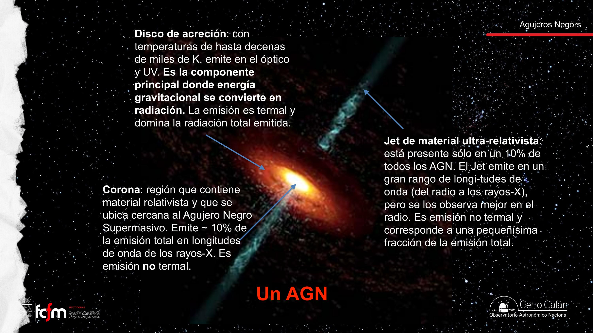
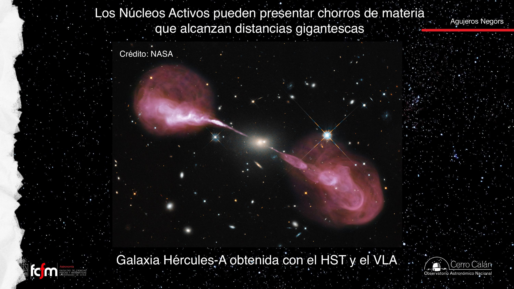
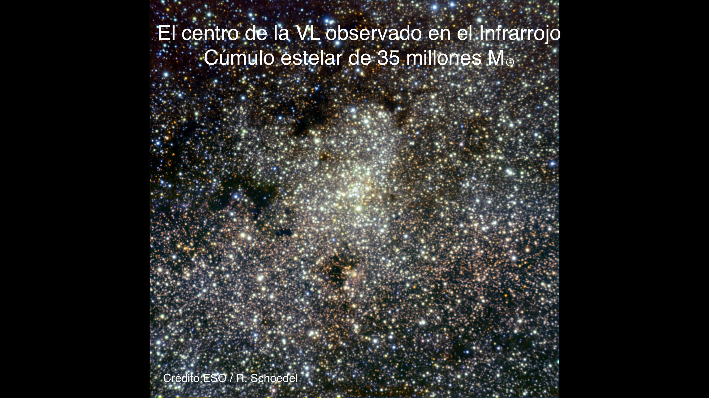
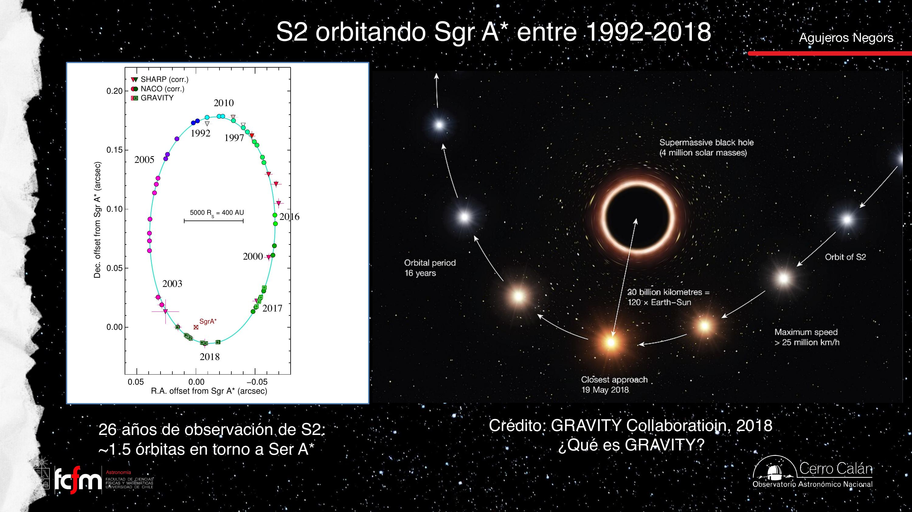
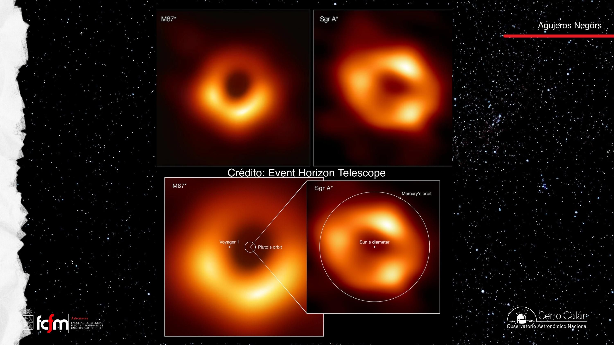
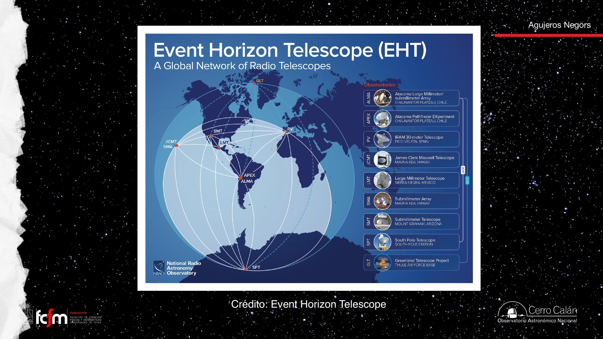
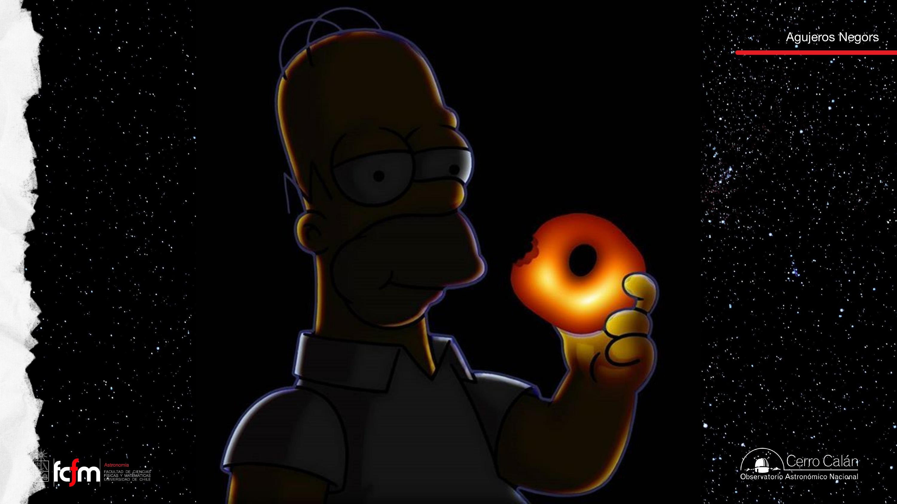
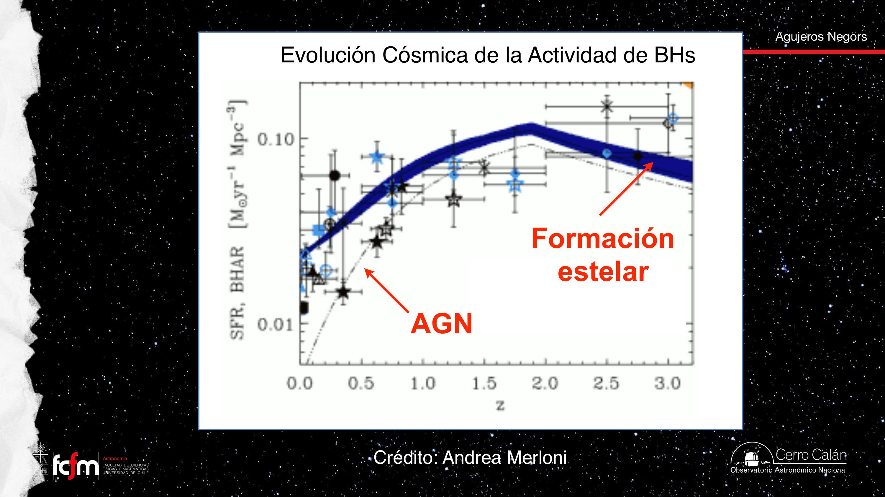
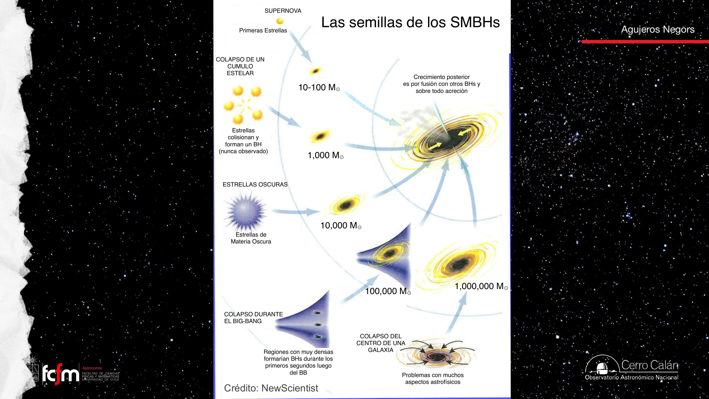
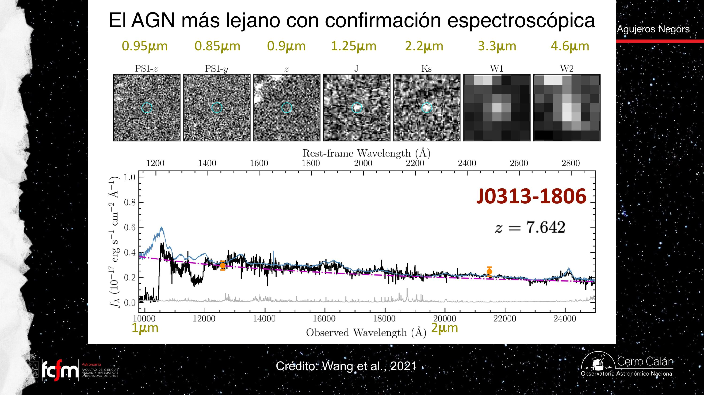

Núcleos activos, Sgr A* y las semillas de los monstruos
Anatomía completa de un AGN (disco, corona, jet), el agujero negro dormido en el corazón de la Vía Láctea revelado por la órbita de la estrella S2, las primeras "fotos" de un horizonte de eventos con el Event Horizon Telescope, y la gran pregunta abierta: ¿de qué semilla creció un agujero negro de miles de millones de masas solares en menos de mil millones de años?
La clase anterior terminó presentando al AGN: un agujero negro supermasivo comiendo, tan luminoso como diez galaxias, del tamaño de un sistema planetario. Esta clase lo diseca pieza por pieza y luego responde dos preguntas complementarias: ¿cómo estudiamos un agujero negro supermasivo que no está comiendo? (respuesta: dinámica de precisión — el caso Sgr A*), y ¿cómo se ve un horizonte de eventos? (respuesta: interferometría planetaria — el EHT). El hilo técnico que une todo es uno solo, y muy de ingeniería: resolución angular, la capacidad de discernir detalles pequeños, gobernada por la fórmula θ ≈ 1.22 λ/D.
Anatomía de un AGN
Tres componentes con tres mecanismos de emisión distintos.
Cuando cae materia a un agujero negro supermasivo, el sistema se vuelve extremadamente luminoso: un núcleo galáctico activo (AGN). Sus piezas:
| Componente | Emisión | Mecanismo | Peso en el total |
|---|---|---|---|
| Disco de acreción | Óptico y ultravioleta | Termal (cuerpo negro): el gas se calienta por fricción al caer, hasta decenas de miles de K | Domina la radiación total |
| Corona | Rayos X | No termal (Compton inverso): electrones relativistas muy cercanos al agujero | ~10% de la emisión |
| Jet | Todo el espectro; se observa mejor en radio | No termal (sincrotrón, por campos magnéticos): material ultrarrelativista | Fracción pequeñísima; presente solo en ~10% de los AGN |

¿Material "ultrarrelativista" = a la velocidad de la luz? No: significa muy cercano a c (99 y algo por ciento). Nada con masa alcanza c; por lo mismo el jet no puede transportar cantidades enormes de masa — se necesitaría energía infinita para acelerarla así.
¿"AGN" es una categoría del universo? Es un nombre nuestro, un modelo que explica la fenomenología observada en los centros de muchas galaxias. Funciona muy bien hoy; en 50 años quizás haya que refinarlo. Así opera la ciencia.
Jets: sutiles en energía, colosales en tamaño
Desde una región del tamaño de un sistema planetario hasta más allá de la galaxia entera.
Aunque energéticamente aportan poco, los jets alcanzan distancias absurdas. En Cygnus A (imagen en radio), los chorros parten del punto central — el AGN, cuya maquinaria cabe en un sistema planetario — y llegan a 225.000 años luz, cuando la Vía Láctea entera mide ~100.000 de lado a lado. Al final de cada jet, donde el material choca con el medio intergaláctico, se forman los lóbulos.

(1) Pocas fuentes astronómicas "ensucian" el cielo en radio: la foto sale limpia, casi solo el jet. (2) La radioastronomía interferométrica logra las mejores resoluciones espaciales. La colimación de los jets — mantenerse delgados por cientos de miles de años luz — sigue siendo un problema abierto; se relaciona con conservación del momento angular y campos magnéticos.
El 90% sin jet: espectros y variabilidad
Cómo se reconoce un AGN cuando no hay chorro de radio que lo delate.
Los primeros AGN descubiertos fueron los quásares radio-emisores — pero son la minoría (~10%). El 90% restante se reconoce por las otras firmas:
- Espectro anómalo: líneas de emisión anchísimas (comparadas con las líneas delgadas de una región H II) y un continuo muy azul que sube hasta el ultravioleta — la firma del disco de acreción, más caliente que cualquier estrella pero con luminosidad de billones de ellas.
- Variabilidad: cambios grandes y rápidos de brillo (el argumento c·Δτ de la clase pasada). Ninguna galaxia normal varía así.
La variabilidad de los AGN es el tema de investigación de la profesora. El Observatorio Vera Rubin, recién inaugurado, tiene como misión central mapear el universo variable: multiplicará por mucho el número de AGN conocidos (de cientos a millones en algunos regímenes).
Sgr A*: el corazón de la Vía Láctea
Un agujero negro supermasivo tranquilo, a 27.000 años luz, escondido detrás del polvo.
¿Y si el agujero negro no está activo? Se puede estudiar igual, midiendo cómo se mueve lo que lo rodea. El ejemplo más cercano: Sagitario A* (Sgr A*), el agujero negro supermasivo de ~4 millones de masas solares en el núcleo de nuestra galaxia, a ~27.000 años luz, en la constelación de Sagitario (la de "la tetera").
El centro galáctico está en la parte más oscura del cielo óptico — no porque no haya nada, sino por el polvo del disco. La solución es observar en el infrarrojo, que penetra el polvo (recordar la curva de extinción: cuanto más al rojo, menos luz se pierde). Ahí aparece lo que el óptico oculta: el cúmulo estelar nuclear, de ~35 millones de masas solares — la región más densa en estrellas de toda la galaxia, al lado del cual los cúmulos globulares son pequeños.

La órbita de S2 y GRAVITY
Treinta años siguiendo una estrella para pesar un agujero negro — y validar a Einstein de paso.
Desde 1992 se han seguido las estrellas más brillantes del cúmulo nuclear con instrumentos sucesivos: SHARP → NACO → GRAVITY (se nota en los datos: cada generación produce puntos con barras de error más chicas y mejor alineados al modelo). La estrella estrella es S2, que ya completó más de una órbita entera alrededor de Sgr A* (pericentros en 2002 y en mayo de 2018).

Con física newtoniana pura no se puede ajustar la órbita observada de S2; solo al incorporar relatividad general (incluido el redshift gravitacional detectado en el pericentro, que la prensa tradujo como "la estrella se puso roja") el modelo describe los datos. Dos conclusiones en una: hay un objeto de ~4 millones de M☉ concentrado en un punto, y Einstein vuelve a pasar el test — esta vez en el régimen de campo fuerte.
Régimen kepleriano: tan cerca del agujero, la dinámica la dicta el cuerpo central (como los planetas respecto al Sol); las demás estrellas casi no influyen. Pero ojo: el dominio de Sgr A* es local — no es cierto que "toda la galaxia gira en torno al agujero negro"; un poco más lejos ya nadie lo siente. Las órbitas del cúmulo van "unas así, otras asá: caos total", desacopladas del disco galáctico a gran escala — como muñecas rusas dinámicamente independientes.
Dos equipos compitiendo: el grupo europeo (ESO/VLT, lo mostrado en clase) y el grupo de la Universidad de California con el Observatorio Keck en Hawái. Resultados independientes y coincidentes: la mejor garantía. El trabajo valió el Premio Nobel de Física 2020 (la jefa del grupo estadounidense es Andrea Ghez; el del europeo, Reinhard Genzel).
Resolución espacial e interferometría
La física que gobierna qué detalles podemos ver — y el truco para saltarse el tamaño del espejo.
La resolución espacial es el tamaño angular más pequeño que un sistema óptico puede discernir (angular, porque un objeto chico y cercano puede ocupar el mismo ángulo que uno enorme y lejano — como la Luna y el Sol, cuya coincidencia de tamaño aparente nos regala los eclipses). La dicta la física de la difracción:
GRAVITY es exactamente eso: los cuatro telescopios de 8 m del VLT observando la misma fuente a λ ~ 2 μm, con la luz llevada a un laboratorio común e interferida en tiempo real. Con D ~ 100 m: resolución de ~5 miliarcosegundos. Por eso puede medir la posición de S2 con esa precisión de relojería.
La interferometría es apertura sintética: en vez de un sensor gigante, muchos sensores chicos + correlación de señales con timestamps ultraprecisos. El área colectora (throughput de fotones) no mejora, pero la resolución (frecuencia espacial máxima muestreada) sí — el clásico trade-off entre sensibilidad y detalle.
La "sombra": M87* y Sgr A* con el EHT
Fotografiar la ausencia: la región que no emite dentro del anillo de luz.
Qué estamos viendo (y por qué la "aureola")
La imagen del agujero negro de Interestelar — la única parte de la película con respaldo científico riguroso, según la clase — es en el fondo "Saturno con anillos": un disco de gas en un plano. La diferencia es la aureola vertical: como el espacio está tan curvado, la luz de la parte trasera del disco (que no deberíamos ver) da la vuelta por arriba y por abajo del agujero y nos llega igual.
La clase lo ilustra con una visualización extrema: la Tierra orbitando un agujero negro de 2000 M☉ (horizonte de eventos ≈ radio terrestre, órbita a 3 Rs, velocidad 0.7c, período 0.2 s, observada desde 5 Rs). La Tierra nunca queda oculta detrás del agujero: justo cuando debería estar tapada, la vemos como un anillo de Einstein completo; y se enrojece al hundirse en el pozo de potencial (redshift gravitacional). Aviso: a esa distancia las mareas ya la habrían despedazado — es solo visualización.
M87* (2019) y Sgr A* (2022)
La primera imagen del Event Horizon Telescope fue del agujero negro de Messier 87, a ~55 millones de años luz: uno de los más masivos conocidos (~3–6 miles de millones de M☉; el análisis del EHT lo fijó en torno a 6.500 millones — dato externo). Lejano, pero tan masivo que su horizonte subtiende un ángulo alcanzable. En 2022 llegó la imagen de Sgr A*: mil veces menos masivo pero mil veces más cercano — por eso ambos tienen casi el mismo tamaño angular (¡otra coincidencia tipo Sol/Luna!). La de Sgr A* fue más difícil: el plano galáctico interpone campos magnéticos y la fuente varía rápido.

"Sombra" es un nombre discutible: no hay fuente detrás proyectando nada; es la zona central que no emite, coincidente con el horizonte de eventos. Y hace falta un poco de gas: estos agujeros no son AGN potentes — si tuvieran un disco de acreción luminoso, el brillo taparía la región oscura. Pero tampoco pueden estar 100% aislados: sin nada de gas brillando alrededor, no habría contraste que fotografiar.
La ingeniería del EHT
Para resolver microsegundos de arco no basta el VLT: se necesita D ≈ el radio de la Tierra. El EHT correlaciona radiotelescopios de todo el planeta (incluidos ALMA y APEX en Chile) observando simultáneamente a λ ~ 1.3–0.8 mm: resolución de ~50 a 30 microarcosegundos. A diferencia del infrarrojo (interferencia en tiempo real, porque la onda no se puede "grabar"), en milimétrico la señal se graba con relojes atómicos de altísima precisión — lo más caro del proyecto — y se hace interferir a posteriori en un computador; los discos viajan en avión o barco hasta el correlacionador.


Un AGN es un agujero negro engordando
La actividad de los agujeros negros sigue la historia de formación estelar del universo.
Cuando vemos un AGN, vemos un agujero negro supermasivo incrementando su masa: el material del disco que cruza el horizonte se queda. La acreción es, de hecho, la manera más eficiente de hacer crecer un agujero negro (las fusiones, a lo más, lo duplican).
A escala cosmológica, la historia de la actividad AGN va de la mano con la formación estelar: ambas curvas (en gráficos logarítmicos tipo plot de Madau) suben hacia el pasado, alcanzan su máximo antes de que el universo tuviera la mitad de su edad — el Cosmic Noon, el "mediodía cósmico" — y luego caen dramáticamente. El universo joven formaba estrellas y alimentaba agujeros negros "como loco"; el actual es un universo tranquilo, conservador: "la fiesta se acabó".

En el centro de una galaxia: la región más densa, llena de gas y estrellas. Basta una perturbación para que el material se precipite — ya sea un TDE ocasional o períodos de acreción sostenida de miles a millones de años. Así se llega a monstruos como M87*.
Masas intermedias y el problema de las semillas
Entre 100 y 100.000 masas solares hay un desierto — y ahí se esconde el origen de los supermasivos.
El censo actual tiene dos poblaciones firmes con cotas empíricas:
- Estelares: desde unas pocas M☉ (remanentes de supernova) hasta ~decenas–100 M☉ (vía ondas gravitacionales).
- Supermasivos: por convención, desde 106 M☉ ("por abajo del millón, el súper te lo sacan") hasta ~1010 M☉. Sgr A*, con 4×106, es "bien piñufla": cerca del límite inferior.
En el medio están los hipotéticos agujeros negros de masa intermedia: los más pequeños encontrados como AGN rondan las 105 M☉ (el primer artículo del doctorado de la profesora fue sobre uno de esa masa), pero de ahí hacia abajo el territorio es casi desconocido. El Observatorio Rubin debería multiplicar los candidatos.
¿De dónde salieron los supermasivos?
El problema aritmético: pasar de una semilla estelar de ~10 M☉ a 109-10 M☉ exige crecer 8 o 9 órdenes de magnitud en un tiempo finito — y encontramos cuásares ya monstruosos cuando el universo era jovencísimo. ¿Alcanza el tiempo? No se sabe. Los teóricos ("les entregas el problema y te inventan todo tipo de agujero negro posible") proponen un menú de semillas:
| Mecanismo | Masa de la semilla | Estado |
|---|---|---|
| Muerte de las primeras estrellas | 10–100 M☉ | Físicamente el más conservador y vigente |
| Colapso de un cúmulo estelar joven | ~1.000 M☉ | Viable; nunca observado |
| Estrellas oscuras (materia oscura) | ~10.000 M☉ | Especulativo |
| Colapso directo del centro de una galaxia | 10⁵–10⁶ M☉ | Con problemas astrofísicos varios |
| Colapso durante el Big Bang (primordiales) | variable | Sin ninguna evidencia hasta ahora |

Los AGN más lejanos
Buscar monstruos tempranos para acorralar a las semillas.
Estrategia: si encuentro un agujero negro ya muy masivo a redshift altísimo, restrinjo qué semillas son posibles ("¿cómo creció tanto en tan poco tiempo?"). Dos récords:
J0313−1806: el más lejano con espectro (z ≈ 7.6)
Un cuásar cuya luz salió cuando el universo era una fracción mínima de su edad actual. A ese redshift todo el espectro ultravioleta emitido se corre al infrarrojo observado (λobs = λemit·(1+z)): en el óptico el objeto simplemente no aparece, y "enciende" recién en los filtros infrarrojos. Así se los busca: fuentes brillantes en el infrarrojo y ausentes en el óptico — mientras más corrido el encendido, más lejos el objeto. El espectro confirmó líneas anchas de AGN: identificación 100% segura.

UHZ1: el récord fotométrico (z ≈ 10.3)
Detectado con el James Webb detrás de un cúmulo de galaxias que actúa como lente gravitacional (distorsiona y amplifica: permite estudiar fuentes que serían demasiado débiles). Sin espectro, su redshift ~10.3 es una estimación fotométrica: invisible hasta ~1.5 μm y claro en los filtros más rojos. La objeción — "una estrella ultrafría podría imitar esos colores" — se descarta porque UHZ1 emite en rayos X (detección de Chandra): la firma de la corona de un AGN, imposible para una enana fría. Si se confirma, es un AGN a solo ~500 millones de años del Big Bang.
Los primeros objetos que uno encuentra al estrenar una técnica son los más luminosos y raros — la excepción, no la norma. Que existan monstruos tempranos "complica la cosa" pero no cierra el debate: quizás partieron de semillas particularmente masivas o crecieron en regiones excepcionalmente densas. La otra vía complementaria: estudiar agujeros de masa intermedia en galaxias cercanas y usar sus masas típicas para inferir cómo fueron las semillas. Próxima parada del curso: cosmología (dos clases seguidas).
Explorar conceptos
Dos calculadoras: qué tan fino puede ver un telescopio, y cuánto demora en crecer una semilla.
Conceptos clave
Tabla de repaso rápido.
| Concepto | Idea esencial |
|---|---|
| Disco de acreción | Componente dominante del AGN; emisión termal (UV/óptico) por fricción del gas; hasta decenas de miles de K. |
| Corona | Electrones relativistas junto al agujero; ~10% de la emisión, en rayos X, no termal (Compton inverso). |
| Jet | Material ultrarrelativista colimado; solo en ~10% de los AGN; emisión sincrotrón, mejor observado en radio; alcanza cientos de miles de años luz (Cygnus A: 225.000). |
| Sgr A* | SMBH de ~4×10⁶ M☉ en el centro de la Vía Láctea (27.000 al), rodeado del cúmulo nuclear (~3.5×10⁷ M☉); se estudia en infrarrojo por el polvo. |
| S2 / GRAVITY | 30 años de astrometría (SHARP→NACO→GRAVITY); la órbita solo se ajusta con relatividad general; Nobel 2020. |
| Resolución angular | θ = 1.22 λ/D; con interferometría, D = distancia entre telescopios (ganas resolución, no área colectora). |
| Anillo de Einstein | Fuente justo detrás de la masa → su imagen se ve como anillo completo; la "aureola" de la sombra es la parte trasera del disco. |
| EHT / la "sombra" | Red global de radiotelescopios (mm); M87* en 2019 y Sgr A* en 2022; la señal se graba con relojes atómicos y se interfiere a posteriori. |
| M87* vs. Sgr A* | Masas ~10⁹ vs. 4×10⁶ M☉, pero casi igual tamaño angular (masa/distancia compensadas, como Sol/Luna). |
| Cosmic Noon | Máximo de actividad AGN y de formación estelar, antes de la mitad de la edad del universo; después, "la fiesta se acabó". |
| Masa intermedia | Rango ~10²–10⁶ M☉ casi vacío de detecciones; frontera activa (Rubin traerá millones de candidatos). |
| Semillas de SMBH | Primeras estrellas (10–100), colapso de cúmulo (10³), estrellas oscuras (10⁴), colapso directo (10⁵–10⁶), primordiales; crecimiento posterior por acreción. |
| J0313−1806 | AGN más lejano con espectro (z≈7.6): todo su UV se observa en el infrarrojo; se busca por "ausencia en el óptico". |
| UHZ1 | Candidato a z≈10.3 (fotométrico), amplificado por un cúmulo-lente; los rayos X descartan que sea una estrella fría. |
Exámenes de práctica
10 exámenes de 5 preguntas: 3 de alternativas autocorregibles + 2 de respuesta escrita con solución propuesta.